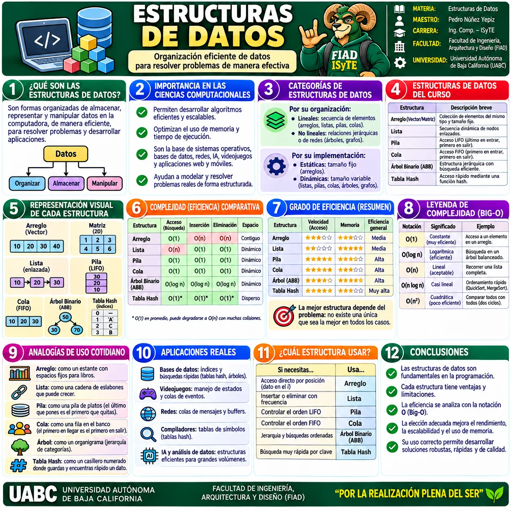
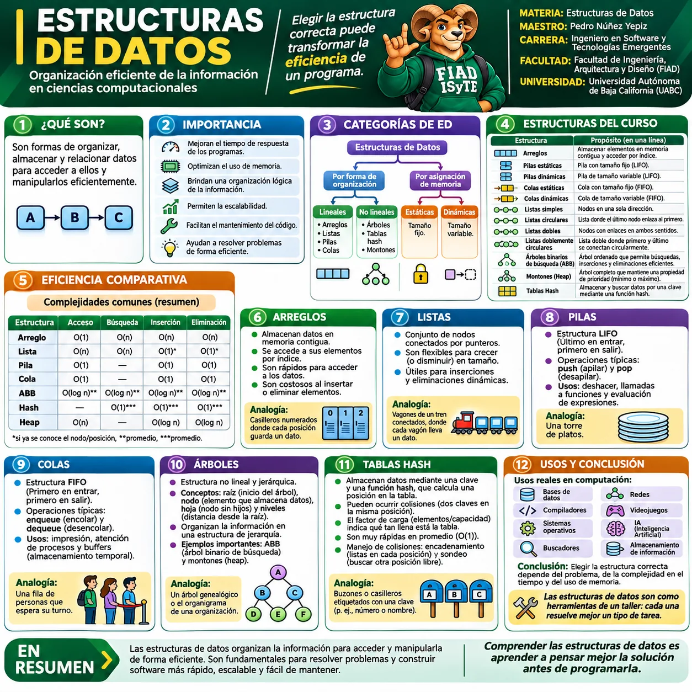

🖼️ Galería visual de Introducción
Selecciona una infografía para verla a pantalla completa. Puedes usar Zoom +/−, anterior/siguiente y Esc para cerrar.

1 · Estructuras de Datos · Conceptos, categorías y eficiencia
Conceptos, importancia, clasificación, eficiencia comparativa y aplicaciones.

2 · Estructuras de Datos · Panorama general del curso
Resumen visual de arreglos, listas, pilas, colas, árboles, tablas hash y complejidad.
💡
RECOMENDACIÓN
Revisa primero los conceptos y categorías generales; después compara las estructuras del curso, su eficiencia y sus aplicaciones.
Revisa primero los conceptos y categorías generales; después compara las estructuras del curso, su eficiencia y sus aplicaciones.